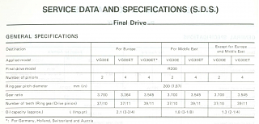

-
Hi dudes,
I've just completed my S-chassis swap and now it's time to look at differentials available. I have an LSD from an S13 but the gear ratio isn't ideal. I read somewhere that people use the diff from the 350z with a bit of notching out of the mounting holes?
What model of diff are people using from the 350z? I read that the Japanese imports (into the UK) cars didn't come with LSD's. Will it marry up to the original Z31 prop or will I need to get a custom prop made?
Any help would be appreciated.
Cheers. -
Aren't there any S13 final drives/pinions available with a suitable ratio? You should be able to swap that and keep the rest. -
Thanks kaur, I can't find anything online, but I'll have a check over with the 200sx guys and see what they say.Originally posted by kaur View Post -
Am I right in saying that my 1988 UK Turbo would have had a final gear ratio of 3.7? I believe the S13 LSD to be 3.9. If this is the case, I might just live with it as I won't be using the car for high cruising speeds anyway. -
Should be 3.545 for 87+ turbo models. A quick search on ebay gave at least one option with 3.69. -
Ah ok. There seems to be some conflicting information online. Thanks for confirming. Could you forward the ebay link please? I can't for the life of me find any. -
Euro models have different specs than USDM. Yours might even be 3.364 then, didn't notice that before. -
Thanks for the ebay link. That's at least one option.Originally posted by kaur View Post
That's a shame it's further in the wrong direction (for Euro models)!
The S14 manual diff is 3.69. It's slightly more in the right direction. I read somewhere that the NA R33 Auto diff is 3.5, but I don't know how difficult it will be to use that diff. I know the S13 guys have run them so it must bolt up to the S13 subframe. -
All the short nose R200 diffs will bolt up to the S13 subframe, no problems there. Otherwise you need to check out what diffs are available to you locally first before thinking about importing one. -
The 350Z diff is not a direct bolt on, the sub needs modification. And then you have the axles to deal withCha iro
enjoy building it yourself.
if it fails, fuck it.
at least you gave it a whirl.Comment
-
I've found this on eBay. Quite cheap too. https://rover.ebay.com/rover/0/0/0?m…2F201702379139

Copyright © 2006–. All rights reserved. Privacy Policy
Comment